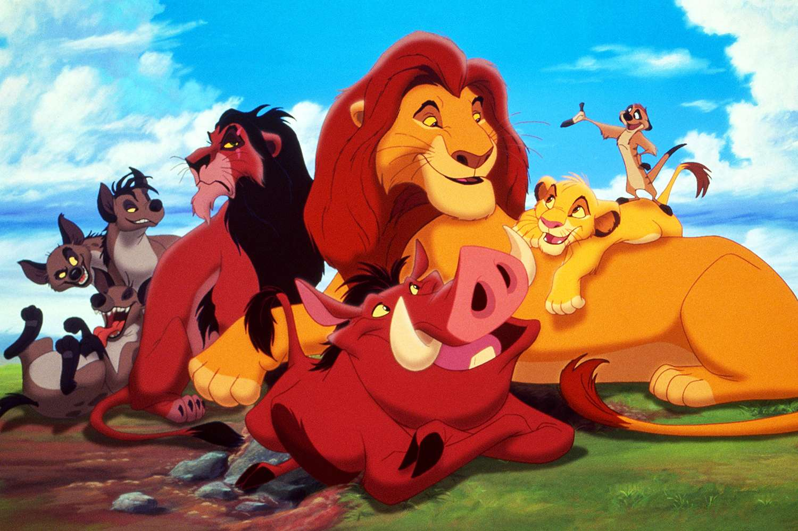

The Lion King is a 1994 American animated musical drama film produced by Walt Disney Feature Animation and released by Walt Disney Pictures .
It is the 32nd Disney animated feature film and the fifth to be produced during the Disney Renaissance .
The film draws inspiration from William Shakespeare 's Hamlet, with elements of the biblical stories of Joseph and Moses , and from Disney's Bambi .
It was directed by Roger Allers and Rob Minkoff , and written by Irene Mecchi , Jonathan Roberts , and Linda Woolverton .
The film stars Matthew Broderick , Moira Kelly , James Earl Jones , Jeremy Irons, Nathan Lane , Ernie Sabella, Whoopi Goldberg , Cheech Marin , Rowan Atkinson , and Robert Guillaume .
The songs were written by Elton John and Tim Rice , and the film score was composed by Hans Zimmer .
The film follows a young lion cub named Simba , who must embrace his role as the rightful king of his homeland and confront its usurper, his uncle Scar .

The Lion King was originally intended to be a non-musical film, leaning toward a documentary-style.
George Scribner, who made his directorial debut on the animated film Oliver & Company , was hired as director, and
Allers joined shortly after his work as a story artist and/or story supervisor on Oliver & Company,
The Little Mermaid , Beauty and the Beast , and Aladdin .
Allers brought in Brenda Chapman and Chris Sanders, with whom he had worked on Beauty and the Beast and
Aladdin, to serve as story supervisor and production designer, respectively.
Woolverton, who had just completed her stint as screenwriter on Beauty and the
Beast, wrote the initial draft of the screenplay
for this film, but after she left the project to write the libretto for the Broadway adaptation of
Beauty and the Beast, Mecchi and Roberts were brought in to complete and revise the script.
Six months into production, Scribner left the project due to creative differences with Allers, producer Hahn, and
Chapman about changing it into a musical, and Minkoff was hired to replace him in April 1992.
Additionally, Beauty and the Beast directors Gary Trousdale and Kirk Wise were hired to perform some additional script and story rewrites.
Throughout production, Allers, Scribner, Minkoff, Hahn, Chapman, Sanders, and several other animators visited Kenya to observe wildlife and gain inspiration for characters and settings.